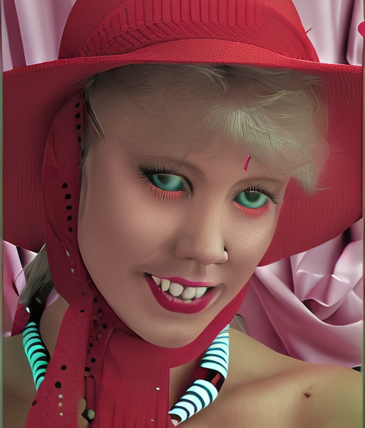
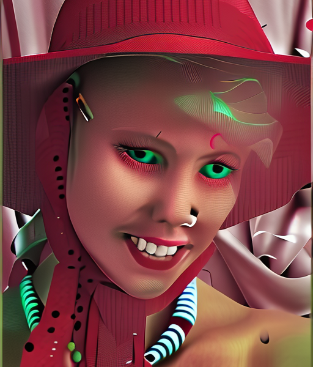
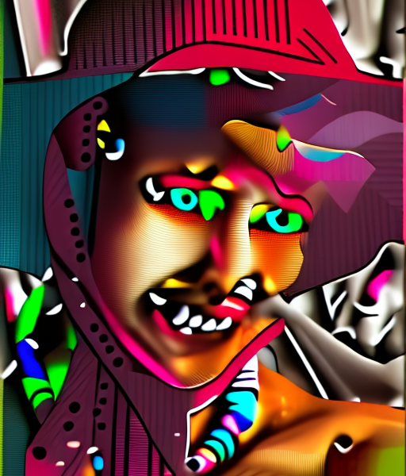
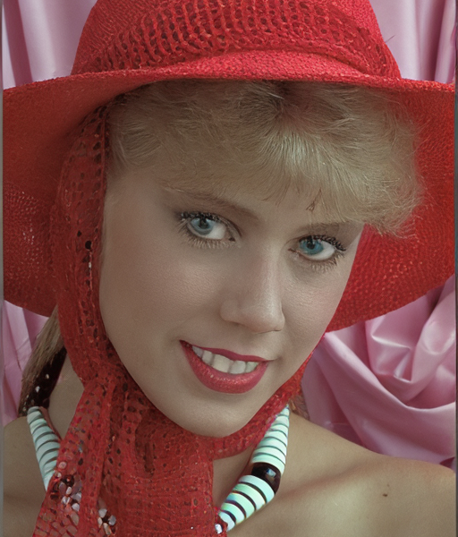

identical at every roundA Kodak image decoded, stored as 8-bit, and compressed again, 50 times. Labels: PSNR and bpp.
Abstract
We introduce an image compression framework with three properties: (i) adaptation of pretrained codecs without retraining or fine-tuning, (ii) cycle-consistent recompression, even of already-encoded images, and (iii) decoding with independently chosen generative priors. We wrap the frozen encoder with non-learned operations so that every continuous latent has a preimage, yielding a surjective pseudo-invertible neural network. A nonlinear right inverse built from the pretrained decoder satisfies E′(D′(E′(x))) = E′(x). To extend consistency to quantized bitstreams, the receiver searches for a continuous latent that reproduces both the transmitted main symbols and entropy side information. A successful search and an exact correction preserve both streams under deterministic coding; the final reconstruction is checked through the actual coding path.
The encoder’s pseudo-inverse enables a nonlinear counterpart of back-projection. In the linear case, back-projection has the closed-form solution x′ = x + A†(y − Ax), giving the closest reconstruction to x satisfying Ax′ = y. Our nonlinear formulation enforces the transmitted code on proposals from an independently chosen generative model. Adjusting the starting noise controls the prior’s influence without changing that code.
Experiments show small first-pass quality changes, higher retained quality than trained consistency codecs over 50 recompressions, also under 8-bit storage, and decoder-side control of the perception–distortion trade-off. Decoupling the codec from its prior lets the receiver adopt future generators without retraining or re-encoding.
Eight pretrained codecs, no retraining
More examples in the viewerEach chain recompresses the same Kodak image 50 times, with 8-bit storage (GLC: float chain). Both panels flicker between round 1 and round 50: the original codec drifts, while the adapted codec reproduces its round-1 image exactly and does not move.
Choose the generator at decoding time
The receiver chooses a prior and its influence after encoding, without weight updates.
HPCM λ = .0018, Kodak kodim16. Every decoder reads the same bitstream; right: the 128×128 detail outlined on the left, enlarged. PixNerd uses its tuned setting; Z-Image uses an untuned setting. Whole-image PSNR ↑ and DISTS ↓.
How it works
We wrap the frozen encoder with non-learned operations so that every continuous latent has a preimage, which turns it into a surjective pseudo-invertible network. A nonlinear right inverse built from the pretrained decoder makes recompression consistent: E′(D′(E′(x))) = E′(x). For quantized bitstreams, the receiver searches for a continuous latent that reproduces both the transmitted main symbols and the entropy side information, and writes it into the image. No network is retrained.

- 01
Wrap the frozen encoder
Non-learned operations give every continuous latent a preimage. No network is retrained.
- 02
Search for the code
The receiver finds a latent that reproduces the transmitted symbols and side information.
- 03
Decode with any generator
Nonlinear back-projection keeps the code while a chosen prior adds detail.
Interactive results
Step through recompression rounds and flicker between methods, storage protocols, and decoders that read the same bitstream.
Open the viewerAbout 106 MB of lossless images, loaded on demand.
BibTeX
@misc{haim2026yourcodec,
title = {Your Codec, Your Generator: Idempotent Generative Compression without Retraining},
author = {Haim, Raz and Shocher, Assaf},
url = {https://assafshocher.github.io/your-codec/},
year = {2026}
}